如果你有总结整理的习惯，可以考虑搭建一个个人博客，把文章发布在上面，相比于其它平台，个人博客的好处是你可以随便折腾，没有太多限制。搭建个人博客的框架有很多，比如wordpress、Hexo、Vuepress、Jekyll、Django等，Hexo博客简洁高效，配置简单，文章可以使用markdown语法编写，下面介绍 hexo博客搭建步骤。
准备条件
为了节约成本，选择GitHub Pages或者Gitee Pages服务来部署博客，GitHub Pages 是GitHub提供的静态网站部署服务，Gitee Pages是gitee提供的服务，考虑到有时候GitHub有时候无法访问，我的博客是搭建在gitee上的。
如果没有账号，注册一个github或者gitee账号，注册完成后安装git客户端，推荐安装Git for Windows，安装方法可以参考：Git简易教程-安装及简单使用
1. 配置Git SSH公钥
通过ssh keys将本地的项目与Github/gitee关联起来，配置方法参考：同一台电脑配置Gitee、Github 的 Git SSH公钥
2. GitHub Pages
在 GitHub 新建一个名称为 {username}.github.io的仓库，username是你的github用户名
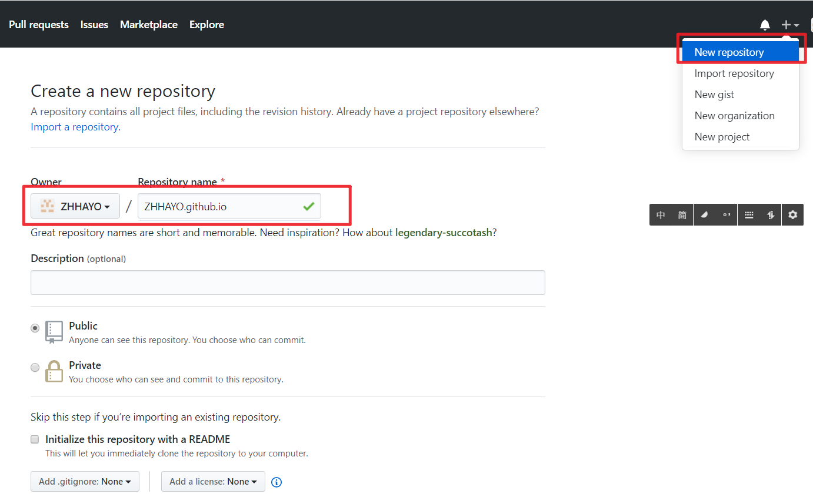
3. Gitee Pages
GitHub Pages 和Gitee Pages选一个就好，Gitee和GitHub有点不一样，建一个和你的博客项目名一样仓库：
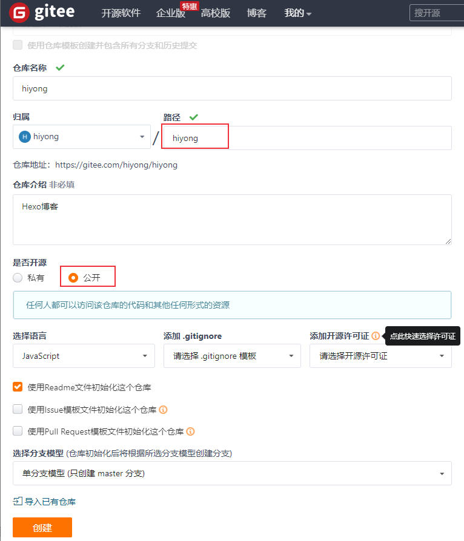
4. 安装 Node.js
Node.js安装方法参考Appium 介绍及环境安装，命令行窗口中运行node -v查看是否安装成功。使用如下命令更新：1
$ npm install npm@latest -g
准备工作做好后，下面开始Hexo博客的搭建和部署。
安装 Hexo
首先安装 Hexo 的命令行工具，用于快速创建项目、页面、编译、部署 Hexo 博客。
命令如下：npm install -g hexo-cli
安装完成后，查看hexo版本：1
2
3
4
5
6
7
8
9
10
11
12
13
14
15
16
17
18
19$ hexo version
hexo-cli: 4.2.0
os: Windows_NT 10.0.19041 win32 x64
node: 12.19.0
v8: 7.8.279.23-node.44
uv: 1.39.0
zlib: 1.2.11
brotli: 1.0.9
ares: 1.16.0
modules: 72
nghttp2: 1.41.0
napi: 7
llhttp: 2.1.2
http_parser: 2.9.3
openssl: 1.1.1g
cldr: 37.0
icu: 67.1
tz: 2019c
unicode: 13.0
安装成功！
初始化项目
创建项目
先cd 进入你要创建博客项目的目录下：hexo init {name}
name为博客项目名，注意如果使用Gitee Pages部署服务，创建的仓库名和这里初始化的博客项目名相同。
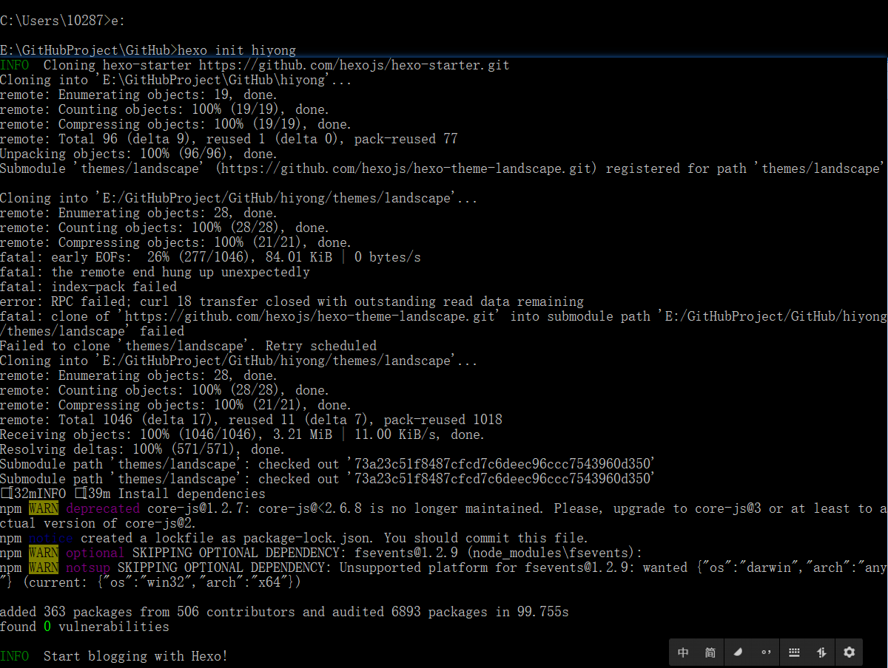
Hexo 编译
进入新生成的博客目录下，调用 Hexo 的 generate 命令，将 Hexo 博客（Markdown文件，在source\_posts目录下，后面会详细介绍）编译生成 HTML 代码：hexo generate
生成的public 文件夹里面包含了 js、css、font 等内容，博客文章在public /posts文件夹下
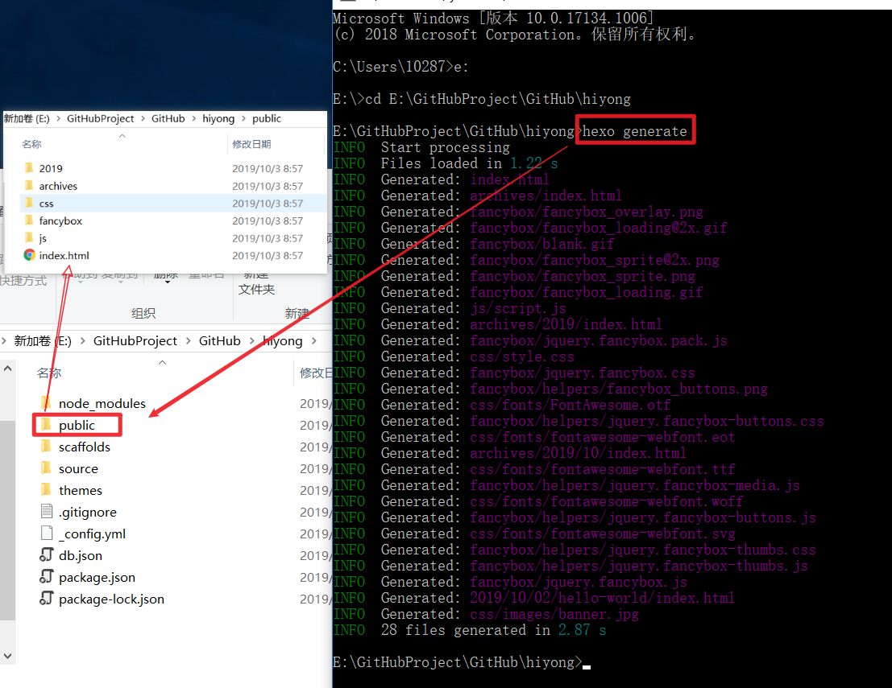
本地运行博客
利用 Hexo 提供的 serve 命令在本地运行博客：hexo serve
浏览器访问http://localhost:4000，就可以打开博客了，有一篇默认文章：
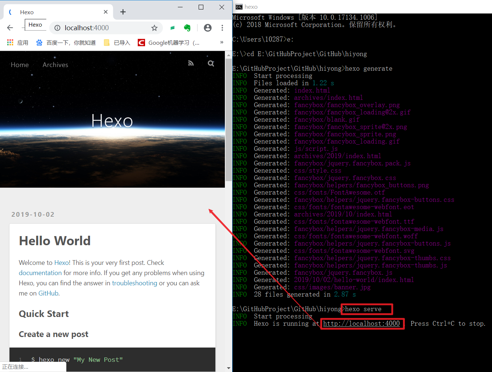
这是博客的默认配置，可以修改配置文件来修改样式，我们先部署到GitHub Pages 上，看看效果。
部署
配置
将编译好的博客发布到github，需要配置github的项目仓库地址。
打开根目录下的 _config.yml 文件，找到 Deployment ，修改如下：1
2
3
4
5
6# Deployment
## Docs: https://hexo.io/docs/deployment.html
deploy:
type: git
repo: git@github.com:ZHHAYO/ZHHAYO.github.io.git
branch: master
仓库地址为你在准备条件中新建的仓库地址，查看方式如下：
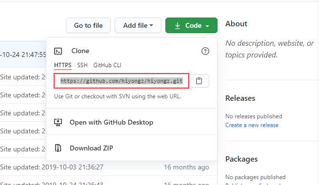
gitee类似：
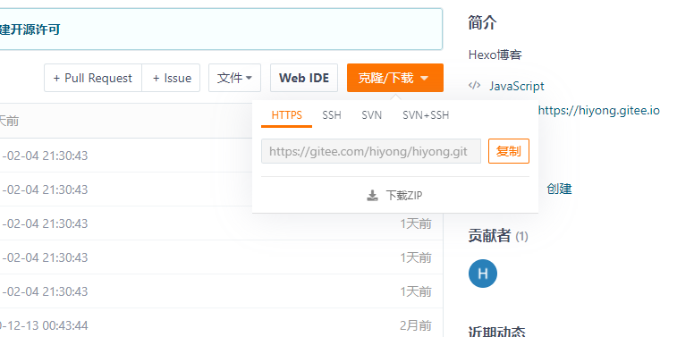
HTTPs或者SSH地址都可以。
注意冒号后面要加空格
安装hexo-deployer-git插件
支持 Git 的部署插件，用于将blog部署到 GitHub 上面
安装命令：npm install hexo-deployer-git --save
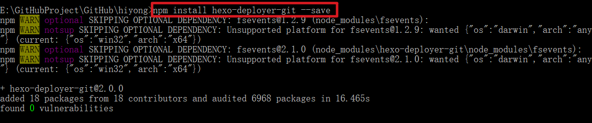
部署
部署命令：hexo deploy
在 blog 目录下，分别输入如下三条命令：
- hexo clean //清除缓存
- hexo g //生成静态文件
- hexo d //部署
其中 clean 用于清除缓存，g 是 generate 生成网站资源，d 就是 deploy 部署网站。
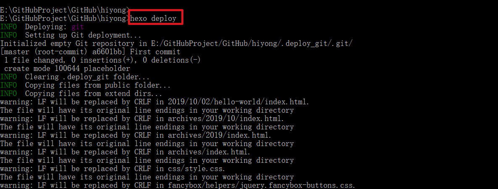
启动GitHub Pages
进入GitHub仓库可以看到public里面的内容传到了仓库里面：
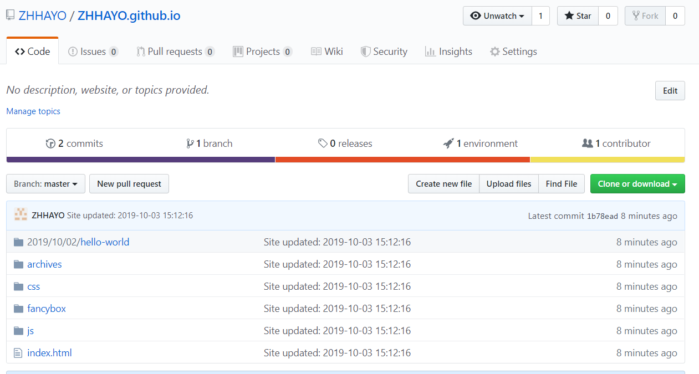
在博客仓库的Settings界面，下拉找到GitHub Pages，生成博客网址
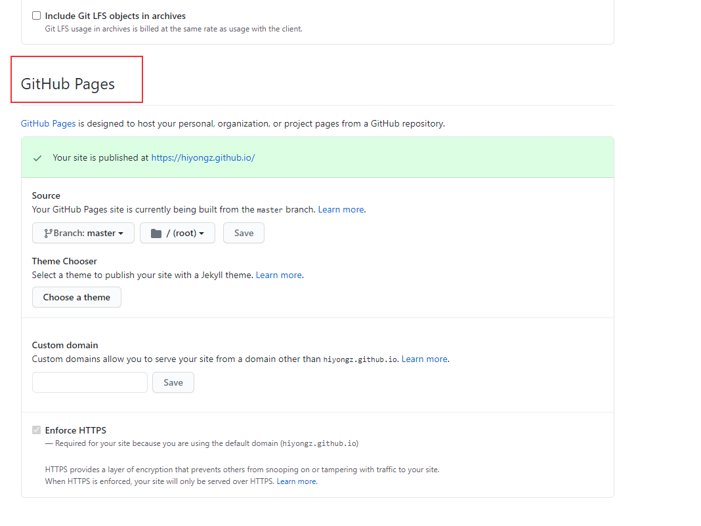
部署成功后就可以通过https://{github用户名}.github.io/ 访问个人博客了
启动Gitee Pages
如果部署到Gitee，也可以在博客仓库下看到上传的资源：
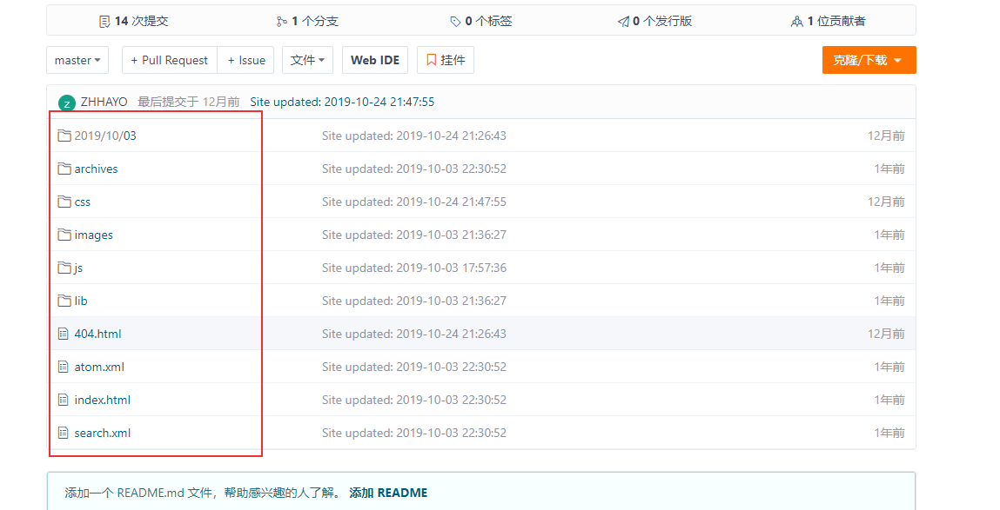
Gitee的启动方式类似：
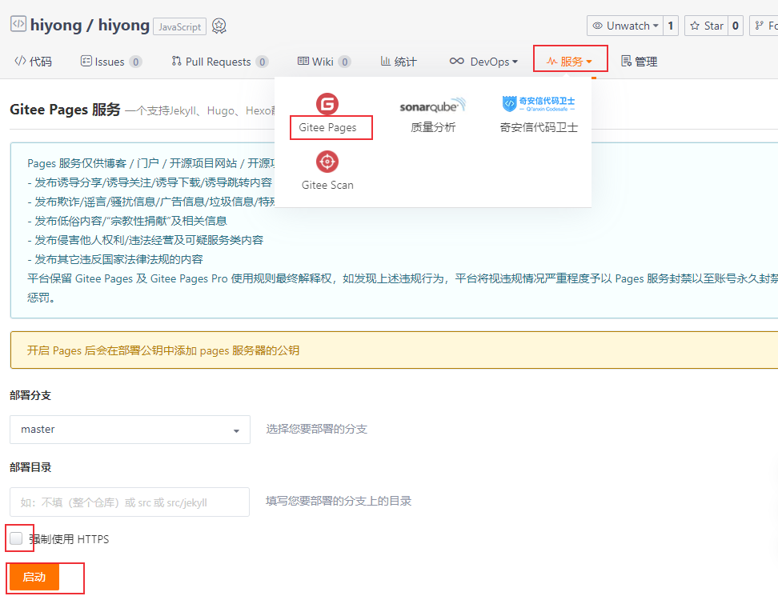
目前就完成了博客的初始构建，下面就进行博客的基本配置，设置主题等
部署完成后，通过https://{gitee用户名}.gitee.io/ 访问个人博客
Hexo的初步部署就完成了，下一篇文章介绍博客文章创建方法和博客主题的简单配置。
注意：博客更新到GitHub后，GitHub Pages会自动部署更新后的博客，而Gitee需要手动更新一下。
标签页
添加标签页命令：hexo new page tags
执行这个命令之后会自动帮我们生成一个 source/tags/index.md 文件：1
2
3
4---
title: tags
date:2019-09-2616:44:17
---
然后再在主题的 _config.yml 文件将这个页面的链接添加到主菜单里面，修改 menu 字段如下：1
2
3
4
5
6
7
8
9menu:
home: / || home
#about: /about/ || user
tags: /tags/ || tags
#categories: /categories/ || th
archives: /archives/ || archive
#schedule: /schedule/ || calendar
#sitemap: /sitemap.xml || sitemap
#commonweal: /404/ || heartbeat
分类页
添加分类页命令：hexo new page categories
同样地，会生成一个 source/categories/index.md 文件。
在主题的 _config.yml 文件将这个页面的链接添加到主菜单里面，修改 menu 字段如下：1
2
3
4
5
6
7
8
9menu:
home: / || home
#about: /about/ || user
tags: /tags/ || tags
categories: /categories/ || th
archives: /archives/ || archive
#schedule: /schedule/ || calendar
#sitemap: /sitemap.xml || sitemap
#commonweal: /404/ || heartbeat
创建博客文章
博客最核心部分还是你输出的的文章，Hexo博客文章可以使用Markdown语法编写，下面介绍文章创建方法。参考文档：https://hexo.io/zh-cn/docs/writing.html
新建文章
在博客根目录命令行输入1
hexo new [layout] <title>
layout指定文章的布局（layout），默认为 post，可以通过修改 _config.yml 中的 default_layout 参数来指定默认布局。
新建一篇名为「HelloWorld」的文章，在博客目录下打开命令行：hexo new hello-world
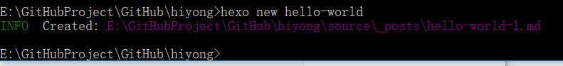
创建的文章会出现在 source/_posts 文件夹下，是 MarkDown 格式：HelloWorld.md。
使用 MarkDown 编辑HelloWorld.md文件就可以了，markdown 语法参考http://www.markdown.cn/#inline-html， 文章编辑好后，执行：1
2
3
4hexo clean //清除缓存
hexo g //生成静态文件
hexo s //本地查看效果 访问 http://localhost:4000
hexo d //部署
创建的文章HelloWorld.md会编译到 \public\posts\HelloWorld目录下，编译为html文件。
草稿箱
也可以新建draft page，顾名思义就是草稿，在博客执行编译操作时，草稿文章不会编译。
创建方法：1
$ hexo new draft HelloWorld
创建的草稿文章会出现在 source/_drafts 文件夹下，可以通过如下命令在本地查看草稿文章：1
2
3$ hexo server --draft
# 或者
$ hexo s --draft
完成草稿文章后，可以通过如下命令发布：1
$ hexo publish HelloWorld
草稿HelloWorld会移到_posts目录里面去。
当然，新建文章和草稿可以采用手动的方式，最对应的目录下新建Markdown文件即可。
文章标签、分类
在新建的文章开头编辑文章的题目，作者，日期，标签等。1
2
3
4
5
6
7
8
9
10---
title: test
date: 2020-10-17 17:24:36
author: hiyo
copyright: true
tags:
- 标签1
- 标签2
categories: 分类
---
子分类
将该文章放到 Sports/Baseball 这个分类下。1
2
3categories:
- Sports
- Baseball
或者：1
2categories:
- [Sports,Baseball]
多个分类
将文章同时分到两个或者多个不同的类目下1
2
3categories:
- [Sports]
- [Play]
1 | categories: |
博客插入图片
介绍三种方法
src 链接
外部的 src 链接地址，存放在 CDN 上，或某图床上
本地绝对路径
将图片统一放在 source/images 文件夹中，在博客中使用如下方式引用图片：1

本地相对路径
将放在文章自己的目录中，配置项目配置文件 _config.yml ：1
post_asset_folder: true
执行命令 $ hexo new post_name，在 source/_posts 中会生成文章 post_name.md 和同名文件夹 post_name 。将图片资源放在 post_name 中，文章就可以使用相对路径引用图片资源了。1

也可以手动创建博客文件和同名文件夹。
搜索页
先安装一个插件 hexo-generator-searchdb：npm install hexo-generator-searchdb --save
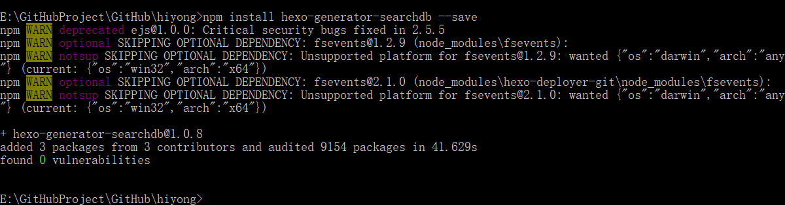
修改项目的 _config.yml 配置文件：1
2
3
4
5search:
path: search.xml
field: post
format: html
limit:10000
修改主题的 _config.yml 配置文件：1
2
3
4
5
6
7
8
9
10
11local_search:
enable: true
# If auto, trigger search by changing input.
# If manual, trigger search by pressing enter key or search button.
trigger: auto
# Show top n results per article, show all results by setting to -1
top_n_per_article: 5
# Unescape html strings to the readable one.
unescape: false
# Preload the search data when the page loads.
preload: false
本文标题:Hexo+Github/Gitee 搭建个人博客
文章作者:hiyo
文章链接:https://hiyongz.github.io/posts/personal-blog-hexo-construction-guide/
许可协议:本博客文章除特别声明外，均采用CC BY-NC-ND 4.0 许可协议。转载请保留原文链接及作者。